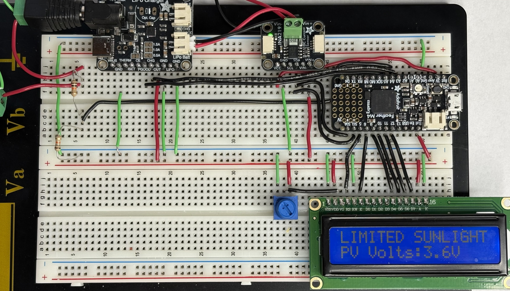
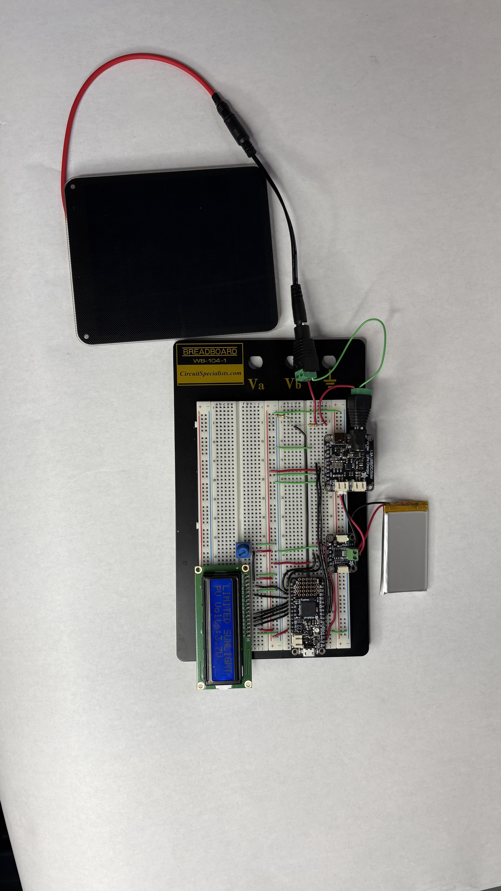
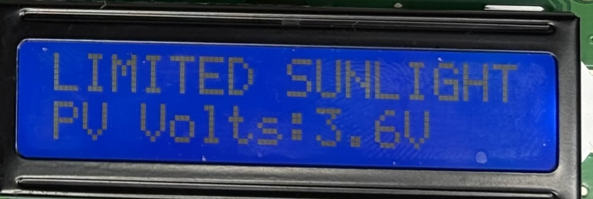

Solar-Powered Battery Charger
First-year electrical engineering project that introduced me to embedded hardware, power management, and practical prototyping.
Project Overview
This project implements a small solar-powered system that can charge a rechargeable battery and report key electrical values. The main goal was to design and assemble a complete hardware setup that takes energy from a solar panel, manages it safely, stores it in a battery, and displays what is happening in real time on an LCD screen.
What the System Includes
- Microcontroller board that coordinates measurements and drives the display.
- INA219 measurement board for reading panel and load voltage and current.
- Charge controller to safely charge a 3.7 V, 1200 mAh battery.
- Character LCD that shows system status and measured values.
- 6 V solar panel as the primary energy source.
- Breadboard-based wiring to connect and prototype all components together.
Engineering Skills Learned
- Writing and structuring microcontroller firmware to coordinate sensors and outputs.
- Configuring I²C communication between the microcontroller and the INA219 measurement board.
- Driving a character LCD, updating text based on live measurements and system state.
- Implementing basic control logic for charging modes and status messages.
- Debugging embedded code and hardware together using serial output and targeted test cases.
- Writing CircuitPython code to implement the logic that ties together sensor readings, charging behavior, and LCD updates.
- Translating engineering requirements into clear, testable behavior in code.

Project Photos

